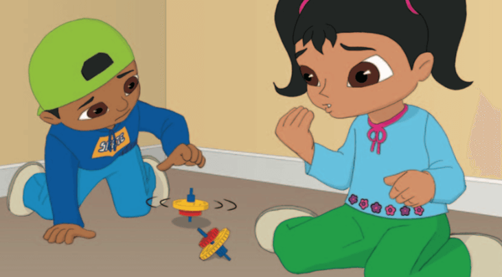
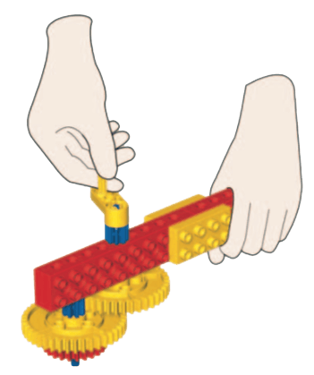
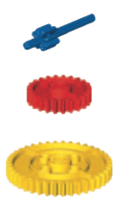

Un día en el parque, Sam y Sara ven a otros niños jugando con peonzas.
Sus peonzas giran mucho tiempo antes de caer. ¡Qué divertido! Sam y Sara piensan en cómo fabricar algunas
peonazas para jugar, y en poco tiempo están haciendo girar sus propias peonzas.
Pero éstos no giran mucho tiempo, y muy pronto empiezan a dolerles los dedos de tanto esfuerzo. ¡
Necesitan algo que los haga girar más rápido y mejor!

Puedes ayudar a Sam y Sara a construir un dispositivo que haga girar a las peonzas? ¡Veamos cómo se hace!
Construye el lanzador y la peonza utilizando las instrucciones. Pincha sobre la imagen para acceder a ellas.
Para lanzar la peonza:
• Sostén el lanzador y coloca el extremo del engranaje del lanzador sobre el eje azul de la peonza.
• El engranaje azul debe encajar en el gran engranaje rojo y girar al mover el asa.

Sugerencia: ¡Lanzar peonzas requiere buenas habilidades de coordinación! Inténtalo.
• Para lanzar la peonza, apóyala sobre la mesa, gira el asa y levanta el lanzador de forma recta hacia arriba
Idea: Puede ser una buena idea dejarlos jugar con la peonza y el lanzador antes de embarcarse en pruebas más serias.
La peonza puede funcionar de dos formas. El engranaje amarillo del lanzador puede encajar en los engranajes
azul y rojo de la peonza (un lado y el otro de la peonza).
Averigua y predice qué peonza girará durante más tiempo.
Pide a los niños que reflexionen sobre sus pruebas preguntándoles cosas como:
• ¿Qué has predicho que ocurriría y por qué?
• Describe lo que ha ocurrido.
• ¿Ha sido ésta una prueba imparcial?
¿Has girado el asa en las pruebas A y B a la misma velocidad? ¿Has probado todos las peonzas sobre la misma
superficie?
• Describe cómo funciona el modelo.
Sugerencia: Para cronometrar con precisión cuánto tiempo giran las peonzas, utiliza un cronómetro.
¿Sabías Que...? ¡El engranaje azul tiene 8 dientes, el engranaje rojo tiene 24 dientes y el amarillo tiene 40 dientes!

¿Puedes Diseñar tu Propia Peonza?
Diseña y crea tus propias peonzas. Considera qué materiales y formas serían los mejores.
Crea alucinantes efectos ópticos y peonzas para todo tipo de juegos.